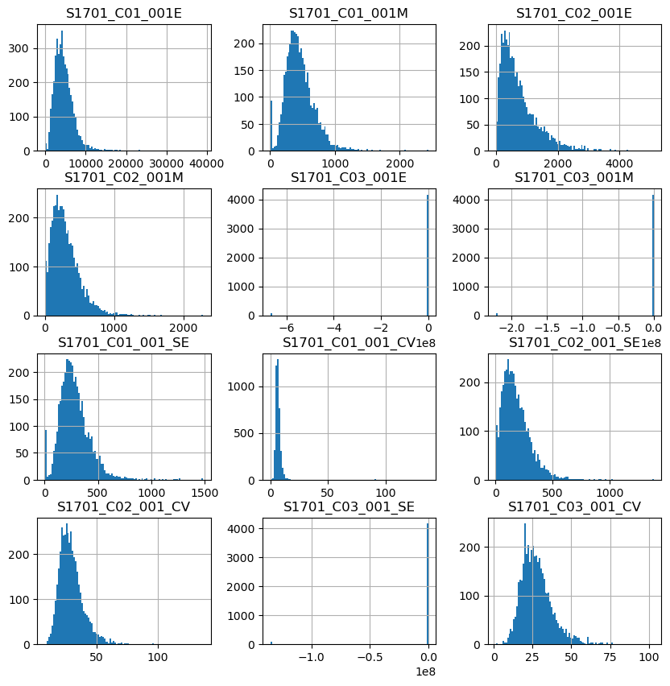
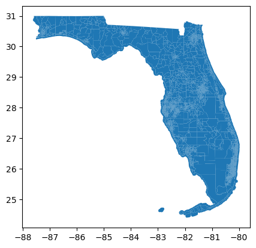
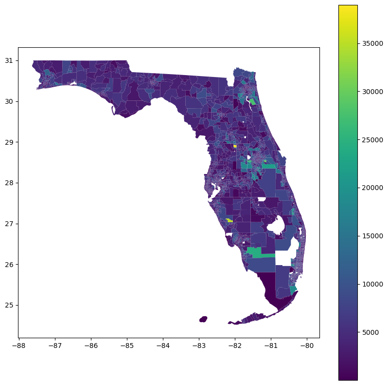
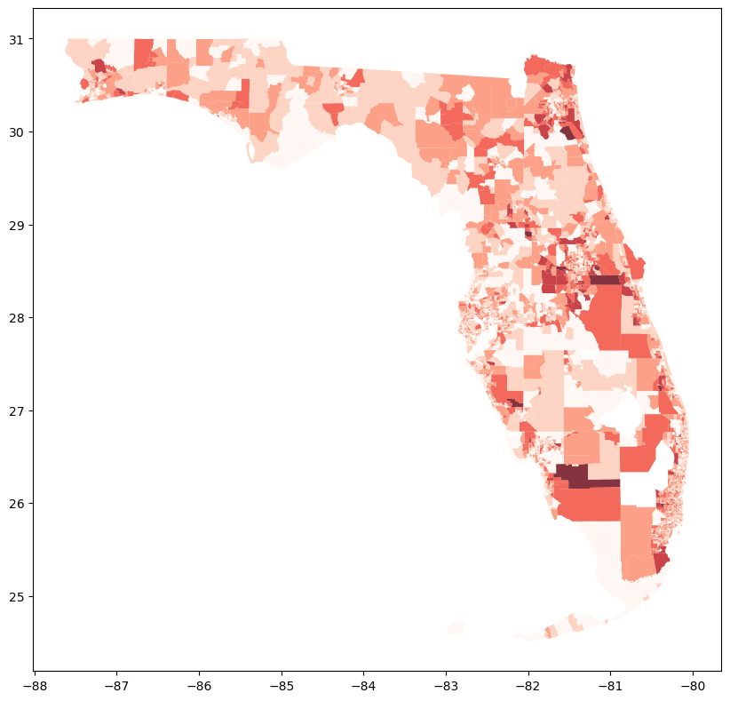
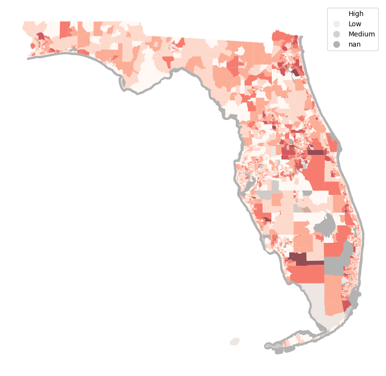

# Data analysis
import geopandas as gpd
import numpy as np
import pandas as pd
# APIs
import requests
# Plotting
import seaborn as sns
from matplotlib import pyplot as plt
import holoviews as hv
import hvplot.pandasMapping Uncertainty in ACS Data
Table of Contents
American Community Survey Data, Coefficients of Variation, and Mapping Uncertainty
For the remainder of this course, students will be using demographic and socioeconomic data as we begin to learn how to analyze social vulnerability to hazards using GIS. In this week’s GIS assignment, we learn how/where to download socioeconomic and demographic data from the United States Census Bureau.
In particular, we will use five-year data estimates from the American Community Survey for 2012-2016. This survey data can be very useful for understanding sociodemographic geographies, but users should keep in mind that it is not strictly census data, even though it is collected and maintained by the US Census Bureau.
As the name suggests, the American Community Survey (ACS) does not count every person in every household but contains population estimates based on survey methodology which samples approximately 1 in 40 households nationwide (more in some places, far fewer in other places). Thus, the data have margins of error associated with the population estimates.
In this experiment exercise, we will use the ACS data at the census tract level for the entire state of Florida. Students will:
- Compare the differences between the US Census TIGER/LINE shapefiles and the IPUMS/NHGIS shapefile data.
- Download ACS data from the Census Bureau.
- Learn how to interpret margins of error and transform margins of error into coefficients of variation.
- Learn how to visualize the population estimates and uncertainty in the data simultaneously.
After reviewing and following the instructions in this Word doc, go to the assignment folder for Lab 5 where you can find the assignment Word doc and the ArcGIS Pro project file for the assignment. You will perform similar tasks for the assignment using additional variables from the American Community Survey at the census tract level for the state of Florida.
Abbreviations used in the exercise:
- MOE: Margin of Error
- CV: Coefficient of Variation
- SE: Standard Error
Task 1: Obtaining Census Enumeration Unit GIS Boundary Data
Task 2: Obtaining Demographic and Socioeconomic Data Tables from the US Census Bureau
pd.options.display.max_columns = 999
pd.options.display.max_colwidth = None‘cenpy’ - “Explore and download data from Census APIs”
Documentation: https://cenpy-devs.github.io/cenpy/
Step 1: Identify what dataset we want
# First step: import cenpy
import cenpy
import matplotlib.pyplot as plt### Step 1: Identify what dataset we want
available = cenpy.explorer.available()
available.head()/Users/gigisung/anaconda3/envs/eda/lib/python3.12/site-packages/cenpy/explorer.py:70: FutureWarning: DataFrame.applymap has been deprecated. Use DataFrame.map instead.
listcols = raw_table.applymap(lambda x: isinstance(x, list)).any()| c_isTimeseries | c_isMicrodata | publisher | temporal | spatial | programCode | modified | keyword | contactPoint | distribution | description | bureauCode | accessLevel | title | c_isAvailable | c_isCube | c_isAggregate | c_dataset | vintage | |
|---|---|---|---|---|---|---|---|---|---|---|---|---|---|---|---|---|---|---|---|
| ABSCB2017 | NaN | NaN | U.S. Census Bureau | 2017/2017 | US | 006:007 | 2020-04-30 00:00:00.0 | (census,) | {'fn': 'ASE Staff', 'hasEmail': 'mailto:erd.annual.survey.of.entrepreneurs@census.gov'} | {'@type': 'dcat:Distribution', 'accessURL': 'http://api.census.gov/data/2017/abscb', 'description': 'API endpoint', 'format': 'API', 'mediaType': 'application/json', 'title': 'API endpoint'} | The Annual Business Survey (ABS) provides information on selected economic and demographic characteristics for businesses and business owners by sex, ethnicity, race, and veteran status. Further, the survey measures research and development (for microbusinesses), new business topics such as innovation and technology, as well as other business characteristics. The U.S. Census Bureau and the National Center conduct the ABS jointly for Science and Engineering Statistics within the National Science Foundation. The ABS replaces the five-year Survey of Business Owners (SBO) for employer businesses, the Annual Survey of Entrepreneurs (ASE), the Business R&D and Innovation for Microbusinesses survey (BRDI-M), and the innovation section of the Business R&D and Innovation Survey (BRDI-S). https://www.census.gov/programs-surveys/abs.html | 006:07 | public | Economic Surveys: Annual Business Survey: Characteristics of Businesses | True | NaN | True | (abscb,) | 2017.0 |
| ABSCB2018 | NaN | NaN | U.S. Census Bureau | 2018/2018 | US | 006:007 | 2020-10-26 00:00:00.0 | (census,) | {'fn': 'ASE Staff', 'hasEmail': 'mailto:Erd.annual.survey.of.entrepreneurs@census.gov'} | {'@type': 'dcat:Distribution', 'accessURL': 'http://api.census.gov/data/2018/abscb', 'description': 'API endpoint', 'format': 'API', 'mediaType': 'application/json', 'title': 'API endpoint'} | The Annual Business Survey (ABS) provides information on selected economic and demographic characteristics for businesses and business owners by sex, ethnicity, race, and veteran status. Further, the survey measures research and development (for microbusinesses), new business topics such as innovation and technology, as well as other business characteristics. The U.S. Census Bureau and the National Center conduct the ABS jointly for Science and Engineering Statistics within the National Science Foundation. The ABS replaces the five-year Survey of Business Owners (SBO) for employer businesses, the Annual Survey of Entrepreneurs (ASE), the Business R&D and Innovation for Microbusinesses survey (BRDI-M), and the innovation section of the Business R&D and Innovation Survey (BRDI-S). https://www.census.gov/programs-surveys/abs.html | 006:07 | public | Economic Surveys: Annual Business Survey: Characteristics of Businesses | True | NaN | True | (abscb,) | 2018.0 |
| ABSCB2019 | NaN | NaN | U.S. Census Bureau | 2019/2019 | US | 006:007 | 2021-08-17 00:00:00.0 | (census,) | {'fn': 'ASE Staff', 'hasEmail': 'mailto:ERD.annual.survey.of.entrepreneurs@census.gov'} | {'@type': 'dcat:Distribution', 'accessURL': 'http://api.census.gov/data/2019/abscb', 'description': 'API endpoint', 'format': 'API', 'mediaType': 'application/json', 'title': 'API endpoint'} | The Annual Business Survey (ABS) provides information on selected economic and demographic characteristics for businesses and business owners by sex, ethnicity, race, and veteran status. Further, the survey measures research and development (for microbusinesses), new business topics such as innovation and technology, as well as other business characteristics. The U.S. Census Bureau and the National Center conduct the ABS jointly for Science and Engineering Statistics within the National Science Foundation. The ABS replaces the five-year Survey of Business Owners (SBO) for employer businesses, the Annual Survey of Entrepreneurs (ASE), the Business R&D and Innovation for Microbusinesses survey (BRDI-M), and the innovation section of the Business R&D and Innovation Survey (BRDI-S). https://www.census.gov/programs-surveys/abs.html | 006:07 | public | Economic Surveys: Annual Business Survey: Characteristics of Businesses | True | NaN | True | (abscb,) | 2019.0 |
| ABSCB2020 | NaN | NaN | U.S. Census Bureau | 2020/2020 | US | 006:007 | 2022-08-03 00:00:00.0 | (census,) | {'fn': 'ASE Staff', 'hasEmail': 'mailto:ERD.annual.survey.of.entrepreneurs@census.gov'} | {'@type': 'dcat:Distribution', 'accessURL': 'http://api.census.gov/data/2020/abscb', 'description': 'API endpoint', 'format': 'API', 'mediaType': 'application/json', 'title': 'API endpoint'} | The Annual Business Survey (ABS) provides information on selected economic and demographic characteristics for businesses and business owners by sex, ethnicity, race, and veteran status. Further, the survey measures research and development (for microbusinesses), new business topics such as innovation and technology, as well as other business characteristics. The U.S. Census Bureau and the National Center conduct the ABS jointly for Science and Engineering Statistics within the National Science Foundation. The ABS replaces the five-year Survey of Business Owners (SBO) for employer businesses, the Annual Survey of Entrepreneurs (ASE), the Business R&D and Innovation for Microbusinesses survey (BRDI-M), and the innovation section of the Business R&D and Innovation Survey (BRDI-S). https://www.census.gov/programs-surveys/abs.html | 006:07 | public | Economic Surveys: Annual Business Survey: Characteristics of Businesses | True | NaN | True | (abscb,) | 2020.0 |
| ABSCB2021 | NaN | NaN | U.S. Census Bureau | 2021/2021 | United States | 006:007 | 2023-07-24 10:30:52.0 | (census,) | {'fn': 'ABS Staff', 'hasEmail': 'mailto:adep.annual.business.survey@census.gov'} | {'@type': 'dcat:Distribution', 'accessURL': 'http://api.census.gov/data/2021/abscb', 'description': 'API endpoint', 'format': 'API', 'mediaType': 'application/json', 'title': 'API endpoint'} | The Annual Business Survey (ABS) provides information on selected economic and demographic characteristics for businesses and business owners by sex, ethnicity, race, and veteran status. Further, the survey measures research and development (for microbusinesses), new business topics such as innovation and technology, as well as other business characteristics. The U.S. Census Bureau and the National Center conduct the ABS jointly for Science and Engineering Statistics within the National Science Foundation. The ABS replaces the five-year Survey of Business Owners (SBO) for employer businesses, the Annual Survey of Entrepreneurs (ASE), the Business R&D and Innovation for Microbusinesses survey (BRDI-M), and the innovation section of the Business R&D and Innovation Survey (BRDI-S). https://www.census.gov/programs-surveys/abs.html | 006:07 | public | Economic Surveys: Annual Business Survey: Characteristics of Businesses | True | NaN | True | (abscb,) | 2021.0 |
# Return a dataframe of all datasets that start with "ACS"
# Axis=0 means to filter the index labels!
acs = available.filter(regex="^ACS", axis=0)
acs.sort_values(by="temporal")| c_isTimeseries | c_isMicrodata | publisher | temporal | spatial | programCode | modified | keyword | contactPoint | distribution | description | bureauCode | accessLevel | title | c_isAvailable | c_isCube | c_isAggregate | c_dataset | vintage | |
|---|---|---|---|---|---|---|---|---|---|---|---|---|---|---|---|---|---|---|---|
| ACSSPP1Y2010 | NaN | NaN | U.S. Census Bureau | 2010/2010 | United States | 006:004 | 2020-02-13 00:00:00.0 | (census,) | {'fn': 'American Community Survey Office', 'hasEmail': 'mailto:acso.users.support@census.gov'} | {'@type': 'dcat:Distribution', 'accessURL': 'http://api.census.gov/data/2010/acs/acs1/spp', 'description': 'API endpoint', 'format': 'API', 'mediaType': 'application/json', 'title': 'API endpoint'} | Selected Population Profiles provide broad social, economic, and housing profiles for a large number of race, ethnic, ancestry, and country/region of birth groups. The data are presented as population counts for the total population and various subgroups and percentages. | 006:07 | public | American Community Survey: 1-Year Estimates: Selected Population Profiles 1-Year | True | True | True | (acs, acs1, spp) | 2010.0 |
| ACSCD1132011 | NaN | NaN | U.S. Census Bureau | 2011/2011 | United States | 006:004 | 2014-10-06 | (census,) | {'fn': 'American Community Survey Office', 'hasEmail': 'mailto:acso.users.support@census.gov'} | {'@type': 'dcat:Distribution', 'accessURL': 'http://api.census.gov/data/2011/acs1/cd113', 'description': 'API endpoint', 'format': 'API', 'mediaType': 'application/json', 'title': 'API endpoint'} | The American Community Survey (ACS) is a nationwide survey designed to provide communities a fresh look at how they are changing. The ACS replaced the decennial census long form in 2010 and thereafter by collecting long form type information throughout the decade rather than only once every 10 years. Questionnaires are mailed to a sample of addresses to obtain information about households -- that is, about each person and the housing unit itself. The American Community Survey produces demographic, social, housing and economic estimates in the form of 1-year, 3-year and 5-year estimates based on population thresholds. The strength of the ACS is in estimating population and housing characteristics. The 3-year data provide key estimates for each of the topic areas covered by the ACS for the nation, all 50 states, the District of Columbia, Puerto Rico, every congressional district, every metropolitan area, and all counties and places with populations of 20,000 or more. Although the ACS produces population, demographic and housing unit estimates,it is the Census Bureau's Population Estimates Program that produces and disseminates the official estimates of the population for the nation, states, counties, cities and towns, and estimates of housing units for states and counties. For 2010 and other decennial census years, the Decennial Census provides the official counts of population and housing units. | 006:07 | public | 2011 American Community Survey 1-Year Profiles for the 113th Congressional Districts | True | NaN | True | (acs1, cd113) | 2011.0 |
| ACSLANG5Y2013 | NaN | NaN | U.S. Census Bureau | 2013/2013 | United States | 006:004 | 2015-09-02 | (census,) | {'fn': 'Education and Social Stratification Branch', 'hasEmail': 'mailto:dsd.ferrett@census.gov'} | {'@type': 'dcat:Distribution', 'accessURL': 'http://api.census.gov/data/2013/language', 'description': 'API endpoint', 'format': 'API', 'mediaType': 'application/json', 'title': 'API endpoint'} | This data set uses the 2009-2013 American Community Survey to tabulate the number of speakers of languages spoken at home and the number of speakers of each language who speak English less than very well. These tabulations are available for the following geographies: nation; each of the 50 states, plus Washington, D.C. and Puerto Rico; counties with 100,000 or more total population and 25,000 or more speakers of languages other than English and Spanish; core-based statistical areas (metropolitan statistical areas and micropolitan statistical areas) with 100,000 or more total population and 25,000 or more speakers of languages other than English and Spanish. | 006:07 | public | 2013 American Community Survey - Table Packages: Detailed Language Spoken in the U.S. | True | NaN | True | (language,) | 2013.0 |
| ACSCD1152015 | NaN | NaN | U.S. Census Bureau | 2015/2015 | United States | 006:004 | 2017-02-10 | (census,) | {'fn': 'American Community Survey Office', 'hasEmail': 'mailto:acso.users.support@census.gov'} | {'@type': 'dcat:Distribution', 'accessURL': 'http://api.census.gov/data/2015/acs1/cd115', 'description': 'API endpoint', 'format': 'API', 'mediaType': 'application/json', 'title': 'API endpoint'} | The American Community Survey (ACS) is an ongoing survey that provides data every year -- giving communities the current information they need to plan investments and services. The ACS covers a broad range of topics about social, economic, demographic, and housing characteristics of the U.S. population. The 115th Congressional District Data Profiles are available for the nation, all 50 states, the District of Columbia, and Puerto Rico (at large). Data profiles contain broad social, economic, housing, and demographic information. The data are presented as population counts for over 1,000 distinct variables. | 006:07 | public | 2015 American Community Survey 1-Year Data Profile 115th Congressional District | True | NaN | True | (acs1, cd115) | 2015.0 |
| ACSEEO5Y2018 | NaN | NaN | U.S. Census Bureau | 2018/2018 | NaN | 006:004 | 2021-07-28 00:00:00.0 | (census,) | {'fn': 'American Community Survey Office', 'hasEmail': 'mailto:acso.users.support@census.gov'} | {'@type': 'dcat:Distribution', 'accessURL': 'http://api.census.gov/data/2018/acs/acs5/eeo', 'description': 'API endpoint', 'format': 'API', 'mediaType': 'application/json', 'title': 'API endpoint'} | Equal Employment Opportunity Tabulation (5-year ACS data) | 006:07 | public | American Community Survey: 5-Year Estimates: Equal Employment Opportunity 5-Year | True | True | True | (acs, acs5, eeo) | 2018.0 |
| ... | ... | ... | ... | ... | ... | ... | ... | ... | ... | ... | ... | ... | ... | ... | ... | ... | ... | ... | ... |
| ACSST5Y2015 | NaN | NaN | U.S. Census Bureau | NaN | NaN | 006:004 | 2018-06-29 00:00:00.0 | (census,) | {'fn': 'American Community Survey Office', 'hasEmail': 'mailto:acso.users.support@census.gov'} | {'@type': 'dcat:Distribution', 'accessURL': 'http://api.census.gov/data/2015/acs/acs5/subject', 'description': 'API endpoint', 'format': 'API', 'mediaType': 'application/json', 'title': 'API endpoint'} | The American Community Survey (ACS) is an ongoing survey that provides data every year -- giving communities the current information they need to plan investments and services. The ACS covers a broad range of topics about social, economic, demographic, and housing characteristics of the U.S. population. The subject tables include the following geographies: nation, all states (including DC and Puerto Rico), all metropolitan areas, all congressional districts, all counties, all places and all tracts. Subject tables provide an overview of the estimates available in a particular topic. The data are presented as both counts and percentages. There are over 66,000 variables in this dataset. | 006:07 | public | ACS 5-Year Subject Tables | True | True | True | (acs, acs5, subject) | 2015.0 |
| ACSST5Y2016 | NaN | NaN | U.S. Census Bureau | NaN | NaN | 006:004 | 2018-06-29 00:00:00.0 | (census,) | {'fn': 'American Community Survey Office', 'hasEmail': 'mailto:acso.users.support@census.gov'} | {'@type': 'dcat:Distribution', 'accessURL': 'http://api.census.gov/data/2016/acs/acs5/subject', 'description': 'API endpoint', 'format': 'API', 'mediaType': 'application/json', 'title': 'API endpoint'} | The American Community Survey (ACS) is an ongoing survey that provides data every year -- giving communities the current information they need to plan investments and services. The ACS covers a broad range of topics about social, economic, demographic, and housing characteristics of the U.S. population. The subject tables include the following geographies: nation, all states (including DC and Puerto Rico), all metropolitan areas, all congressional districts, all counties, all places and all tracts. Subject tables provide an overview of the estimates available in a particular topic. The data are presented as both counts and percentages. There are over 66,000 variables in this dataset. | 006:07 | public | ACS 5-Year Subject Tables | True | True | True | (acs, acs5, subject) | 2016.0 |
| ACSST5Y2017 | NaN | NaN | U.S. Census Bureau | NaN | NaN | 006:004 | 2018-10-19 00:00:00.0 | (census,) | {'fn': 'American Community Survey Office', 'hasEmail': 'mailto:acso.users.support@census.gov'} | {'@type': 'dcat:Distribution', 'accessURL': 'http://api.census.gov/data/2017/acs/acs5/subject', 'description': 'API endpoint', 'format': 'API', 'mediaType': 'application/json', 'title': 'API endpoint'} | The American Community Survey (ACS) is an ongoing survey that provides data every year -- giving communities the current information they need to plan investments and services. The ACS covers a broad range of topics about social, economic, demographic, and housing characteristics of the U.S. population. The subject tables include the following geographies: nation, all states (including DC and Puerto Rico), all metropolitan areas, all congressional districts, all counties, all places and all tracts. Subject tables provide an overview of the estimates available in a particular topic. The data are presented as both counts and percentages. There are over 66,000 variables in this dataset. | 006:07 | public | ACS 5-Year Subject Tables | True | True | True | (acs, acs5, subject) | 2017.0 |
| ACSST5Y2018 | NaN | NaN | U.S. Census Bureau | NaN | NaN | 006:004 | 2019-10-22 15:36:29.0 | (census,) | {'fn': 'American Community Survey Office', 'hasEmail': 'mailto:Acso.users.support@census.gov'} | {'@type': 'dcat:Distribution', 'accessURL': 'http://api.census.gov/data/2018/acs/acs5/subject', 'description': 'API endpoint', 'format': 'API', 'mediaType': 'application/json', 'title': 'API endpoint'} | The American Community Survey (ACS) is an ongoing survey that provides data every year -- giving communities the current information they need to plan investments and services. The ACS covers a broad range of topics about social, economic, demographic, and housing characteristics of the U.S. population. The subject tables include the following geographies: nation, all states (including DC and Puerto Rico), all metropolitan areas, all congressional districts, all counties, all places and all tracts. Subject tables provide an overview of the estimates available in a particular topic. The data are presented as both counts and percentages. There are over 66,000 variables in this dataset. | 006:07 | public | ACS 5-Year Subject Tables | True | True | True | (acs, acs5, subject) | 2018.0 |
| ACSST5Y2019 | NaN | NaN | U.S. Census Bureau | NaN | NaN | 006:004 | 2020-04-03 00:00:00.0 | (census,) | {'fn': 'American Community Survey Office', 'hasEmail': 'mailto:acso.users.support@census.gov'} | {'@type': 'dcat:Distribution', 'accessURL': 'http://api.census.gov/data/2019/acs/acs5/subject', 'description': 'API endpoint', 'format': 'API', 'mediaType': 'application/json', 'title': 'API endpoint'} | The American Community Survey (ACS) is an ongoing survey that provides data every year -- giving communities the current information they need to plan investments and services. The ACS covers a broad range of topics about social, economic, demographic, and housing characteristics of the U.S. population. The subject tables include the following geographies: nation, all states (including DC and Puerto Rico), all metropolitan areas, all congressional districts, all counties, all places and all tracts. Subject tables provide an overview of the estimates available in a particular topic. The data are presented as both counts and percentages. There are over 66,000 variables in this dataset. | 006:07 | public | American Community Survey: 5-Year Estimates: Subject Tables 5-Year | True | True | True | (acs, acs5, subject) | 2019.0 |
244 rows × 19 columns
Step 2: Initialize the API connection
acs = cenpy.remote.APIConnection("ACSST5Y2016")
acs.variables.head(n=10)| label | concept | predicateType | group | limit | predicateOnly | hasGeoCollectionSupport | attributes | required | values | |
|---|---|---|---|---|---|---|---|---|---|---|
| for | Census API FIPS 'for' clause | Census API Geography Specification | fips-for | N/A | 0 | True | NaN | NaN | NaN | NaN |
| in | Census API FIPS 'in' clause | Census API Geography Specification | fips-in | N/A | 0 | True | NaN | NaN | NaN | NaN |
| ucgid | Uniform Census Geography Identifier clause | Census API Geography Specification | ucgid | N/A | 0 | True | True | NaN | NaN | NaN |
| S0804_C04_068E | Public transportation (excluding taxicab)!!Estimate!!Workers 16 years and over who did not work at home!!TIME ARRIVING AT WORK FROM HOME!!5:00 a.m. to 5:29 a.m. | MEANS OF TRANSPORTATION TO WORK BY SELECTED CHARACTERISTICS FOR WORKPLACE GEOGRAPHY | float | S0804 | 0 | NaN | NaN | S0804_C04_068EA,S0804_C04_068M,S0804_C04_068MA | NaN | NaN |
| S0503_C02_078E | Foreign born; Born in Europe!!Estimate!!INDUSTRY!!Retail trade | SELECTED CHARACTERISTICS OF THE FOREIGN-BORN POPULATION BY REGION OF BIRTH: EUROPE | float | S0503 | 0 | NaN | NaN | S0503_C02_078EA,S0503_C02_078M,S0503_C02_078MA | NaN | NaN |
| S0701PR_C01_028E | Total!!Estimate!!MARITAL STATUS!!Population 15 years and over | GEOGRAPHIC MOBILITY BY SELECTED CHARACTERISTICS IN PUERTO RICO | int | S0701PR | 0 | NaN | NaN | S0701PR_C01_028EA,S0701PR_C01_028M,S0701PR_C01_028MA | NaN | NaN |
| S0804_C04_067E | Public transportation (excluding taxicab)!!Estimate!!Workers 16 years and over who did not work at home!!TIME ARRIVING AT WORK FROM HOME!!12:00 a.m. to 4:59 a.m. | MEANS OF TRANSPORTATION TO WORK BY SELECTED CHARACTERISTICS FOR WORKPLACE GEOGRAPHY | float | S0804 | 0 | NaN | NaN | S0804_C04_067EA,S0804_C04_067M,S0804_C04_067MA | NaN | NaN |
| S0503_C02_077E | Foreign born; Born in Europe!!Estimate!!INDUSTRY!!Wholesale trade | SELECTED CHARACTERISTICS OF THE FOREIGN-BORN POPULATION BY REGION OF BIRTH: EUROPE | float | S0503 | 0 | NaN | NaN | S0503_C02_077EA,S0503_C02_077M,S0503_C02_077MA | NaN | NaN |
| S0701PR_C01_029E | Total!!Estimate!!MARITAL STATUS!!Population 15 years and over!!Never married | GEOGRAPHIC MOBILITY BY SELECTED CHARACTERISTICS IN PUERTO RICO | int | S0701PR | 0 | NaN | NaN | S0701PR_C01_029EA,S0701PR_C01_029M,S0701PR_C01_029MA | NaN | NaN |
| S0503_C02_076E | Foreign born; Born in Europe!!Estimate!!INDUSTRY!!Manufacturing | SELECTED CHARACTERISTICS OF THE FOREIGN-BORN POPULATION BY REGION OF BIRTH: EUROPE | float | S0503 | 0 | NaN | NaN | S0503_C02_076EA,S0503_C02_076M,S0503_C02_076MA | NaN | NaN |
Step 3: Find the variables we want to load
# Assuming 'acs' is your ACSST5Y2016 APIConnection object
variables = ["S1701_C01_001E", "S1701_C01_001M", "S1701_C02_001E", "S1701_C02_001M", "S1701_C03_001E", "S1701_C03_001M"]
# Florida's FIPS code is 12
florida_tracts = acs.query(
cols=variables,
geo_unit='tract:*',
geo_filter={'state':'12'}
)
# Display the first few rows of the retrieved data
florida_tracts.head()| S1701_C01_001E | S1701_C01_001M | S1701_C02_001E | S1701_C02_001M | S1701_C03_001E | S1701_C03_001M | state | county | tract | |
|---|---|---|---|---|---|---|---|---|---|
| 0 | 2504 | 240 | 224 | 107 | 8.9 | 4.4 | 12 | 071 | 001701 |
| 1 | 6075 | 590 | 227 | 210 | 3.7 | 3.4 | 12 | 071 | 010303 |
| 2 | 7342 | 1045 | 1603 | 772 | 21.8 | 9.4 | 12 | 071 | 010307 |
| 3 | 9873 | 788 | 1548 | 617 | 15.7 | 6.1 | 12 | 071 | 010103 |
| 4 | 4549 | 727 | 757 | 426 | 16.6 | 8.7 | 12 | 071 | 001801 |
florida_tracts['GEOID'] = florida_tracts['state'] + florida_tracts['county'] + florida_tracts['tract']
# florida_tracts = florida_tracts.set_index('GEOID')
florida_tracts.head()| S1701_C01_001E | S1701_C01_001M | S1701_C02_001E | S1701_C02_001M | S1701_C03_001E | S1701_C03_001M | state | county | tract | GEOID | |
|---|---|---|---|---|---|---|---|---|---|---|
| 0 | 2504 | 240 | 224 | 107 | 8.9 | 4.4 | 12 | 071 | 001701 | 12071001701 |
| 1 | 6075 | 590 | 227 | 210 | 3.7 | 3.4 | 12 | 071 | 010303 | 12071010303 |
| 2 | 7342 | 1045 | 1603 | 772 | 21.8 | 9.4 | 12 | 071 | 010307 | 12071010307 |
| 3 | 9873 | 788 | 1548 | 617 | 15.7 | 6.1 | 12 | 071 | 010103 | 12071010103 |
| 4 | 4549 | 727 | 757 | 426 | 16.6 | 8.7 | 12 | 071 | 001801 | 12071001801 |
vars=['S1701_C01_001','S1701_C02_001','S1701_C03_001']
for i in vars:
florida_tracts[f"{i}E"] = florida_tracts[f"{i}E"].astype('float')
florida_tracts[f"{i}M"] = florida_tracts[f"{i}M"].astype('float')
florida_tracts.info()<class 'pandas.core.frame.DataFrame'>
RangeIndex: 4245 entries, 0 to 4244
Data columns (total 10 columns):
# Column Non-Null Count Dtype
--- ------ -------------- -----
0 S1701_C01_001E 4245 non-null float64
1 S1701_C01_001M 4245 non-null float64
2 S1701_C02_001E 4245 non-null float64
3 S1701_C02_001M 4245 non-null float64
4 S1701_C03_001E 4245 non-null float64
5 S1701_C03_001M 4245 non-null float64
6 state 4245 non-null object
7 county 4245 non-null object
8 tract 4245 non-null object
9 GEOID 4245 non-null object
dtypes: float64(6), object(4)
memory usage: 331.8+ KBflorida_tracts.sort_values(by='S1701_C01_001E',ascending=True).head(10)| S1701_C01_001E | S1701_C01_001M | S1701_C02_001E | S1701_C02_001M | S1701_C03_001E | S1701_C03_001M | state | county | tract | GEOID | |
|---|---|---|---|---|---|---|---|---|---|---|
| 4188 | 0.0 | 13.0 | 0.0 | 13.0 | -666666666.0 | -222222222.0 | 12 | 127 | 990000 | 12127990000 |
| 1233 | 0.0 | 13.0 | 0.0 | 13.0 | -666666666.0 | -222222222.0 | 12 | 099 | 980200 | 12099980200 |
| 1234 | 0.0 | 13.0 | 0.0 | 13.0 | -666666666.0 | -222222222.0 | 12 | 099 | 980400 | 12099980400 |
| 1235 | 0.0 | 13.0 | 0.0 | 13.0 | -666666666.0 | -222222222.0 | 12 | 099 | 980500 | 12099980500 |
| 2100 | 0.0 | 13.0 | 0.0 | 13.0 | -666666666.0 | -222222222.0 | 12 | 031 | 990000 | 12031990000 |
| 2099 | 0.0 | 13.0 | 0.0 | 13.0 | -666666666.0 | -222222222.0 | 12 | 099 | 980100 | 12099980100 |
| 1615 | 0.0 | 13.0 | 0.0 | 13.0 | -666666666.0 | -222222222.0 | 12 | 029 | 990000 | 12029990000 |
| 1236 | 0.0 | 13.0 | 0.0 | 13.0 | -666666666.0 | -222222222.0 | 12 | 099 | 990000 | 12099990000 |
| 1237 | 0.0 | 13.0 | 0.0 | 13.0 | -666666666.0 | -222222222.0 | 12 | 099 | 990100 | 12099990100 |
| 2644 | 0.0 | 13.0 | 0.0 | 13.0 | -666666666.0 | -222222222.0 | 12 | 091 | 990200 | 12091990200 |
variables = ["S1701_C01_001E", "S1701_C01_001M", "S1701_C02_001E", "S1701_C02_001M", "S1701_C03_001E", "S1701_C03_001M"]
for i in variables:
florida_tracts[i] = florida_tracts[i].replace(0, np.nan)
florida_tracts.sort_values(by='S1701_C01_001E',ascending=True).head(10)| S1701_C01_001E | S1701_C01_001M | S1701_C02_001E | S1701_C02_001M | S1701_C03_001E | S1701_C03_001M | state | county | tract | GEOID | |
|---|---|---|---|---|---|---|---|---|---|---|
| 466 | 4.0 | 9.0 | 4.0 | 9.0 | 100.0 | 100.0 | 12 | 087 | 980100 | 12087980100 |
| 193 | 6.0 | 9.0 | 4.0 | 6.0 | 66.7 | 66.7 | 12 | 073 | 001300 | 12073001300 |
| 465 | 7.0 | 11.0 | NaN | 13.0 | NaN | 100.0 | 12 | 087 | 980000 | 12087980000 |
| 2439 | 7.0 | 11.0 | 7.0 | 11.0 | 100.0 | 100.0 | 12 | 086 | 008904 | 12086008904 |
| 3313 | 12.0 | 18.0 | NaN | 13.0 | NaN | 95.0 | 12 | 119 | 980000 | 12119980000 |
| 1858 | 16.0 | 24.0 | NaN | 13.0 | NaN | 82.3 | 12 | 057 | 980500 | 12057980500 |
| 2387 | 23.0 | 28.0 | NaN | 13.0 | NaN | 68.6 | 12 | 119 | 911000 | 12119911000 |
| 2810 | 25.0 | 18.0 | NaN | 13.0 | NaN | 65.8 | 12 | 055 | 980000 | 12055980000 |
| 3431 | 32.0 | 52.0 | 32.0 | 52.0 | 100.0 | 58.2 | 12 | 105 | 980000 | 12105980000 |
| 3388 | 38.0 | 18.0 | 6.0 | 6.0 | 15.8 | 18.9 | 12 | 001 | 000902 | 12001000902 |
type(florida_tracts)pandas.core.frame.DataFrameflorida_tracts.isnull().sum()S1701_C01_001E 81
S1701_C01_001M 0
S1701_C02_001E 87
S1701_C02_001M 0
S1701_C03_001E 6
S1701_C03_001M 0
state 0
county 0
tract 0
GEOID 0
dtype: int64Task 3: Calculate Coefficients of Variation for ACS Data
To calculate the Standard Error (SE) and Coefficient of Variation (CV) for the variables of interest from the American Community Survey (ACS) data, we use the following formulas:
- The Standard Error (SE) can be derived from the Margin of Error (MOE) provided for each estimate. The ACS provides MOE at a 90% confidence level, which is approximately 1.645 times the standard error. Therefore, the formula to calculate the SE from the MOE is:
\[ SE = \frac{MOE}{1.645} \]
- The Coefficient of Variation (CV) is a measure of relative variability and is calculated as the ratio of the standard error (SE) to the estimate itself, expressed as a percentage. The formula for CV is:
\[ CV = \left( \frac{SE}{Estimate} \right) \times 100 \]
For each variable of interest, we apply these formulas. Let’s take the variable S1701_C01_001E (Estimate) and its corresponding margin of error S1701_C01_001M (MOE) as an example:
- First, calculate the Standard Error (SE) for
S1701_C01_001E:
florida_tracts['S1701_C01_001E_SE'] = florida_tracts['S1701_C01_001M'] / 1.645- Then, calculate the Coefficient of Variation (CV) for S1701_C01_001E:
florida_tracts['S1701_C01_001E_CV'] = (florida_tracts['S1701_C01_001E_SE'] / florida_tracts['S1701_C01_001E']) * 100- Repeat these steps for all the variables of interest.
florida_tracts.info()<class 'pandas.core.frame.DataFrame'>
RangeIndex: 4245 entries, 0 to 4244
Data columns (total 10 columns):
# Column Non-Null Count Dtype
--- ------ -------------- -----
0 S1701_C01_001E 4164 non-null float64
1 S1701_C01_001M 4245 non-null float64
2 S1701_C02_001E 4158 non-null float64
3 S1701_C02_001M 4245 non-null float64
4 S1701_C03_001E 4239 non-null float64
5 S1701_C03_001M 4245 non-null float64
6 state 4245 non-null object
7 county 4245 non-null object
8 tract 4245 non-null object
9 GEOID 4245 non-null object
dtypes: float64(6), object(4)
memory usage: 331.8+ KBvars=['S1701_C01_001','S1701_C02_001','S1701_C03_001']
for i in vars:
florida_tracts[f"{i}_SE"] = florida_tracts[f"{i}M"] / 1.645
florida_tracts[f"{i}_CV"] = florida_tracts[f"{i}_SE"] / florida_tracts[f"{i}E"] * 100
florida_tracts.head()| S1701_C01_001E | S1701_C01_001M | S1701_C02_001E | S1701_C02_001M | S1701_C03_001E | S1701_C03_001M | state | county | tract | GEOID | S1701_C01_001_SE | S1701_C01_001_CV | S1701_C02_001_SE | S1701_C02_001_CV | S1701_C03_001_SE | S1701_C03_001_CV | |
|---|---|---|---|---|---|---|---|---|---|---|---|---|---|---|---|---|
| 0 | 2504.0 | 240.0 | 224.0 | 107.0 | 8.9 | 4.4 | 12 | 071 | 001701 | 12071001701 | 145.896657 | 5.826544 | 65.045593 | 29.038211 | 2.674772 | 30.053618 |
| 1 | 6075.0 | 590.0 | 227.0 | 210.0 | 3.7 | 3.4 | 12 | 071 | 010303 | 12071010303 | 358.662614 | 5.903911 | 127.659574 | 56.237698 | 2.066869 | 55.861332 |
| 2 | 7342.0 | 1045.0 | 1603.0 | 772.0 | 21.8 | 9.4 | 12 | 071 | 010307 | 12071010307 | 635.258359 | 8.652388 | 469.300912 | 29.276414 | 5.714286 | 26.212320 |
| 3 | 9873.0 | 788.0 | 1548.0 | 617.0 | 15.7 | 6.1 | 12 | 071 | 010103 | 12071010103 | 479.027356 | 4.851893 | 375.075988 | 24.229715 | 3.708207 | 23.619151 |
| 4 | 4549.0 | 727.0 | 757.0 | 426.0 | 16.6 | 8.7 | 12 | 071 | 001801 | 12071001801 | 441.945289 | 9.715218 | 258.966565 | 34.209586 | 5.288754 | 31.859963 |
florida_tracts.info()<class 'pandas.core.frame.DataFrame'>
RangeIndex: 4245 entries, 0 to 4244
Data columns (total 16 columns):
# Column Non-Null Count Dtype
--- ------ -------------- -----
0 S1701_C01_001E 4245 non-null float64
1 S1701_C01_001M 4245 non-null float64
2 S1701_C02_001E 4245 non-null float64
3 S1701_C02_001M 4245 non-null float64
4 S1701_C03_001E 4245 non-null float64
5 S1701_C03_001M 4245 non-null float64
6 state 4245 non-null object
7 county 4245 non-null object
8 tract 4245 non-null object
9 GEOID 4245 non-null object
10 S1701_C01_001_SE 4245 non-null float64
11 S1701_C01_001_CV 4245 non-null float64
12 S1701_C02_001_SE 4245 non-null float64
13 S1701_C02_001_CV 4245 non-null float64
14 S1701_C03_001_SE 4245 non-null float64
15 S1701_C03_001_CV 4245 non-null float64
dtypes: float64(12), object(4)
memory usage: 530.8+ KBflorida_tracts.isnull().sum()S1701_C01_001E 81
S1701_C01_001M 0
S1701_C02_001E 87
S1701_C02_001M 0
S1701_C03_001E 6
S1701_C03_001M 0
state 0
county 0
tract 0
GEOID 0
S1701_C01_001_SE 0
S1701_C01_001_CV 81
S1701_C02_001_SE 0
S1701_C02_001_CV 87
S1701_C03_001_SE 0
S1701_C03_001_CV 6
dtype: int64florida_tracts.hist(bins=100, figsize=(10,10))array([[<Axes: title={'center': 'S1701_C01_001E'}>,
<Axes: title={'center': 'S1701_C01_001M'}>,
<Axes: title={'center': 'S1701_C02_001E'}>],
[<Axes: title={'center': 'S1701_C02_001M'}>,
<Axes: title={'center': 'S1701_C03_001E'}>,
<Axes: title={'center': 'S1701_C03_001M'}>],
[<Axes: title={'center': 'S1701_C01_001_SE'}>,
<Axes: title={'center': 'S1701_C01_001_CV'}>,
<Axes: title={'center': 'S1701_C02_001_SE'}>],
[<Axes: title={'center': 'S1701_C02_001_CV'}>,
<Axes: title={'center': 'S1701_C03_001_SE'}>,
<Axes: title={'center': 'S1701_C03_001_CV'}>]], dtype=object)
Task 4: Categorize Census Tracts According to Data Quality as Indicated by CVs
for i in vars:
conditions = [
(florida_tracts[f"{i}_CV"] < 0),
(florida_tracts[f"{i}_CV"] < 12),
(florida_tracts[f"{i}_CV"] < 40),
(florida_tracts[f"{i}_CV"] >= 40)
]
# Define choices corresponding to each condition
choices = ["No CV", "High", "Medium", "Low"]
# Use np.select to apply conditions and choices to the dataframe
florida_tracts[f"{i}_rating"] = np.select(conditions, choices, default=np.nan)
florida_tracts.head()| S1701_C01_001E | S1701_C01_001M | S1701_C02_001E | S1701_C02_001M | S1701_C03_001E | S1701_C03_001M | state | county | tract | GEOID | S1701_C01_001_SE | S1701_C01_001_CV | S1701_C02_001_SE | S1701_C02_001_CV | S1701_C03_001_SE | S1701_C03_001_CV | S1701_C01_001_rating | S1701_C02_001_rating | S1701_C03_001_rating | |
|---|---|---|---|---|---|---|---|---|---|---|---|---|---|---|---|---|---|---|---|
| 0 | 2504.0 | 240.0 | 224.0 | 107.0 | 8.9 | 4.4 | 12 | 071 | 001701 | 12071001701 | 145.896657 | 5.826544 | 65.045593 | 29.038211 | 2.674772 | 30.053618 | High | Medium | Medium |
| 1 | 6075.0 | 590.0 | 227.0 | 210.0 | 3.7 | 3.4 | 12 | 071 | 010303 | 12071010303 | 358.662614 | 5.903911 | 127.659574 | 56.237698 | 2.066869 | 55.861332 | High | Low | Low |
| 2 | 7342.0 | 1045.0 | 1603.0 | 772.0 | 21.8 | 9.4 | 12 | 071 | 010307 | 12071010307 | 635.258359 | 8.652388 | 469.300912 | 29.276414 | 5.714286 | 26.212320 | High | Medium | Medium |
| 3 | 9873.0 | 788.0 | 1548.0 | 617.0 | 15.7 | 6.1 | 12 | 071 | 010103 | 12071010103 | 479.027356 | 4.851893 | 375.075988 | 24.229715 | 3.708207 | 23.619151 | High | Medium | Medium |
| 4 | 4549.0 | 727.0 | 757.0 | 426.0 | 16.6 | 8.7 | 12 | 071 | 001801 | 12071001801 | 441.945289 | 9.715218 | 258.966565 | 34.209586 | 5.288754 | 31.859963 | High | Medium | Medium |
florida_tracts.to_csv('florida_tracts.csv')Task 5: Join the File to the Florida Tracts Geometry
acs.geographies['fips']| name | geoLevelDisplay | referenceDate | requires | wildcard | optionalWithWCFor | |
|---|---|---|---|---|---|---|
| 0 | us | 010 | 2016-01-01 | NaN | NaN | NaN |
| 1 | region | 020 | 2016-01-01 | NaN | NaN | NaN |
| 2 | division | 030 | 2016-01-01 | NaN | NaN | NaN |
| 3 | state | 040 | 2016-01-01 | NaN | NaN | NaN |
| 4 | county | 050 | 2016-01-01 | [state] | [state] | state |
| 5 | county subdivision | 060 | 2016-01-01 | [state, county] | [county] | county |
| 6 | subminor civil division | 067 | 2016-01-01 | [state, county, county subdivision] | NaN | NaN |
| 7 | tract | 140 | 2016-01-01 | [state, county] | [county] | county |
| 8 | place | 160 | 2016-01-01 | [state] | [state] | state |
| 9 | consolidated city | 170 | 2016-01-01 | [state] | [state] | state |
| 10 | alaska native regional corporation | 230 | 2016-01-01 | [state] | [state] | state |
| 11 | american indian area/alaska native area/hawaiian home land | 250 | 2016-01-01 | NaN | NaN | NaN |
| 12 | american indian tribal subdivision | 251 | 2016-01-01 | [american indian area/alaska native area/hawaiian home land] | [american indian area/alaska native area/hawaiian home land] | american indian area/alaska native area/hawaiian home land |
| 13 | american indian area/alaska native area (reservation or statistical entity only) | 252 | 2016-01-01 | [american indian area/alaska native area/hawaiian home land] | [american indian area/alaska native area/hawaiian home land] | american indian area/alaska native area/hawaiian home land |
| 14 | american indian area (off-reservation trust land only)/hawaiian home land | 254 | 2016-01-01 | [american indian area/alaska native area/hawaiian home land] | [american indian area/alaska native area/hawaiian home land] | american indian area/alaska native area/hawaiian home land |
| 15 | tribal census tract | 256 | 2016-01-01 | [american indian area/alaska native area/hawaiian home land] | NaN | NaN |
| 16 | state (or part) | 260 | 2016-01-01 | [american indian area/alaska native area/hawaiian home land] | NaN | NaN |
| 17 | metropolitan statistical area/micropolitan statistical area | 310 | 2016-01-01 | NaN | NaN | NaN |
| 18 | principal city (or part) | 312 | 2016-01-01 | [metropolitan statistical area/micropolitan statistical area, state (or part)] | NaN | NaN |
| 19 | metropolitan division | 314 | 2016-01-01 | [metropolitan statistical area/micropolitan statistical area] | NaN | NaN |
| 20 | combined statistical area | 330 | 2016-01-01 | NaN | NaN | NaN |
| 21 | combined new england city and town area | 335 | 2016-01-01 | NaN | NaN | NaN |
| 22 | new england city and town area | 350 | 2016-01-01 | NaN | NaN | NaN |
| 23 | principal city | 352 | 2016-01-01 | [new england city and town area, state (or part)] | [state (or part)] | state (or part) |
| 24 | necta division | 355 | 2016-01-01 | [new england city and town area] | NaN | NaN |
| 25 | urban area | 400 | 2016-01-01 | NaN | NaN | NaN |
| 26 | congressional district | 500 | 2016-01-01 | [state] | [state] | state |
| 27 | state legislative district (upper chamber) | 610 | 2016-01-01 | [state] | NaN | NaN |
| 28 | state legislative district (lower chamber) | 620 | 2016-01-01 | [state] | NaN | NaN |
| 29 | public use microdata area | 795 | 2016-01-01 | [state] | [state] | state |
| 30 | zip code tabulation area | 860 | 2016-01-01 | [state] | [state] | state |
| 31 | school district (elementary) | 950 | 2016-01-01 | [state] | NaN | NaN |
| 32 | school district (secondary) | 960 | 2016-01-01 | [state] | NaN | NaN |
| 33 | school district (unified) | 970 | 2016-01-01 | [state] | NaN | NaN |
counties = cenpy.explorer.fips_table("COUNTY")
counties.head()| 0 | 1 | 2 | 3 | 4 | |
|---|---|---|---|---|---|
| 0 | AL | 1 | 1 | Autauga County | H1 |
| 1 | AL | 1 | 3 | Baldwin County | H1 |
| 2 | AL | 1 | 5 | Barbour County | H1 |
| 3 | AL | 1 | 7 | Bibb County | H1 |
| 4 | AL | 1 | 9 | Blount County | H1 |
import pygrispygris.tracts?Signature:
pygris.tracts(
state=None,
county=None,
cb=False,
year=None,
cache=False,
subset_by=None,
)
Docstring:
Load a Census tracts shapefile into Python as a GeoDataFrame
Parameters
----------
state : str
The state name, state abbreviation, or two-digit FIPS code of the desired state.
If None, Census tracts for the entire United States will be downloaded if available for that
year / dataset combination.
county : str
The county name or three-digit FIPS code of the desired county. If None, Census tracts
for the selected state will be downloaded.
cb : bool
If set to True, download a generalized (1:500k) cartographic boundary file.
Defaults to False (the regular TIGER/Line file).
year : int
The year of the TIGER/Line or cartographic boundary shapefile.
cache : bool
If True, the function will download a Census shapefile to a cache directory
on the user's computer for future access. If False, the function will load
the shapefile directly from the Census website.
subset_by : tuple, int, slice, dict, geopandas.GeoDataFrame, or geopandas.GeoSeries
An optional directive telling pygris to return a subset of data using
underlying arguments in geopandas.read_file().
subset_by operates as follows:
* If a user supplies a tuple of format (minx, miny, maxx, maxy),
it will be interpreted as a bounding box and rows will be returned
that intersect that bounding box;
* If a user supplies a integer or a slice object, the first n rows
(or the rows defined by the slice object) will be returned;
* If a user supplies an object of type geopandas.GeoDataFrame
or of type geopandas.GeoSeries, rows that intersect the input
object will be returned. CRS misalignment will be resolved
internally.
* A dict of format {"address": "buffer_distance"} will return rows
that intersect a buffer of a given distance (in meters) around an
input address.
Returns
----------
geopandas.GeoDataFrame: A GeoDataFrame of Census tracts.
Notes
----------
See https://www2.census.gov/geo/pdfs/reference/GARM/Ch10GARM.pdf for more information.
File: ~/anaconda3/envs/eda/lib/python3.12/site-packages/pygris/enumeration_units.py
Type: functionfl_tracts_geo=pygris.tracts(
state="FL",
year=2016,
)
fl_tracts_geo.plot()Using FIPS code '12' for input 'FL'
len(fl_tracts_geo)4245fl_tracts_geo.info()<class 'geopandas.geodataframe.GeoDataFrame'>
RangeIndex: 4245 entries, 0 to 4244
Data columns (total 13 columns):
# Column Non-Null Count Dtype
--- ------ -------------- -----
0 STATEFP 4245 non-null object
1 COUNTYFP 4245 non-null object
2 TRACTCE 4245 non-null object
3 GEOID 4245 non-null object
4 NAME 4245 non-null object
5 NAMELSAD 4245 non-null object
6 MTFCC 4245 non-null object
7 FUNCSTAT 4245 non-null object
8 ALAND 4245 non-null int64
9 AWATER 4245 non-null int64
10 INTPTLAT 4245 non-null object
11 INTPTLON 4245 non-null object
12 geometry 4245 non-null geometry
dtypes: geometry(1), int64(2), object(10)
memory usage: 431.3+ KBTask 6: Merge the demographic data with geometries
florida_demo_final=fl_tracts_geo.merge(
florida_tracts,
on='GEOID')florida_demo_final.plot(column='S1701_C01_001E', legend=True, figsize=(10,10))
Task 7: Map the Poverty Rate Data and Include Data Quality as Indicated by CVs
For this visualization, we’ll focus on mapping the poverty rate using a graduated color scheme based on S1701_C01_001E and overlaying this with hatched patterns based on S1701_C01_001_rating to indicate data quality.
We’ll adjust transparency as needed to make both layers visible and interpretable.
florida_demo_final.info()<class 'geopandas.geodataframe.GeoDataFrame'>
RangeIndex: 4245 entries, 0 to 4244
Data columns (total 31 columns):
# Column Non-Null Count Dtype
--- ------ -------------- -----
0 STATEFP 4245 non-null object
1 COUNTYFP 4245 non-null object
2 TRACTCE 4245 non-null object
3 GEOID 4245 non-null object
4 NAME 4245 non-null object
5 NAMELSAD 4245 non-null object
6 MTFCC 4245 non-null object
7 FUNCSTAT 4245 non-null object
8 ALAND 4245 non-null int64
9 AWATER 4245 non-null int64
10 INTPTLAT 4245 non-null object
11 INTPTLON 4245 non-null object
12 geometry 4245 non-null geometry
13 S1701_C01_001E 4164 non-null float64
14 S1701_C01_001M 4245 non-null float64
15 S1701_C02_001E 4158 non-null float64
16 S1701_C02_001M 4245 non-null float64
17 S1701_C03_001E 4239 non-null float64
18 S1701_C03_001M 4245 non-null float64
19 state 4245 non-null object
20 county 4245 non-null object
21 tract 4245 non-null object
22 S1701_C01_001_SE 4245 non-null float64
23 S1701_C01_001_CV 4164 non-null float64
24 S1701_C02_001_SE 4245 non-null float64
25 S1701_C02_001_CV 4158 non-null float64
26 S1701_C03_001_SE 4245 non-null float64
27 S1701_C03_001_CV 4239 non-null float64
28 S1701_C01_001_rating 4245 non-null object
29 S1701_C02_001_rating 4245 non-null object
30 S1701_C03_001_rating 4245 non-null object
dtypes: float64(12), geometry(1), int64(2), object(16)
memory usage: 1.0+ MB- S1701_C01_001E: poverty ref population estimate
- S1701_C02_001E: poverty population estimate
- S1701_C03_001E: percentage of poverty population estimate
# florida_demo_final.explore(column="S1701_C01_001E", tiles="CartoDB positron")Step 1: Visualize Poverty Rates
First, we’ll plot the poverty rates with a graduated color scheme. Since we want a red color scheme, we’ll use a colormap ranging from light to dark red to represent increasing poverty rates. We’ll make this layer less transparent to keep it visible under the data quality overlay.
import matplotlib.pyplot as plt
import matplotlib.colors as colors
# Step 1: Plot poverty rates
fig, ax = plt.subplots(1, 1, figsize=(10, 10))
florida_demo_final.plot(column='S1701_C01_001E', ax=ax, legend=True,
legend_kwds={'label': "Poverty Rate (%)", 'orientation': "horizontal"},
cmap='Reds', scheme='NaturalBreaks', k=6, edgecolor='none', alpha=0.8)
# Adjust as necessary for your dataset and preferences
plt.title('Florida Poverty Rates & Data Quality')
plt.axis('off')
# Placeholder for Step 2: This will involve plotting the data quality overlay
# This step will be added after explaining the logic for data quality visualization
plt.show()TypeError: Legend.__init__() got an unexpected keyword argument 'label'
Step 2: Overlay Data Quality Information
Next, we’ll add the data quality overlay. For this, we’ll categorize the tracts based on their S1701_C01_001_rating and use hatched fills to indicate the quality. Different hatch patterns (or colors) will be used for “High”, “Medium”, “Low”, and “No CV” categories. This layer will be more transparent so the poverty rates underneath are still visible.
florida_demo_final['S1701_C01_001_rating'] = florida_demo_final['S1701_C01_001_rating'].astype('category')
florida_demo_final['S1701_C01_001_rating'].cat.set_categories(['High', 'Medium', 'Low', 'No CV'], ordered=True)
# Plotting
fig, ax = plt.subplots(figsize=(10, 10))
florida_demo_final.plot(column='S1701_C01_001E', ax=ax, legend=True,
# legend_kwds={'label': "Poverty Rate (%)", 'orientation': "horizontal"},
cmap='Reds', scheme='NaturalBreaks', k=6, edgecolor='none')
# Overlap with color intensity for uncertainty
florida_demo_final.plot(column='S1701_C01_001_rating', ax=ax, legend=True,
cmap='Greys', alpha=0.3, edgecolor='none') # Using greyscale for simplicity
plt.axis('off')
plt.show()